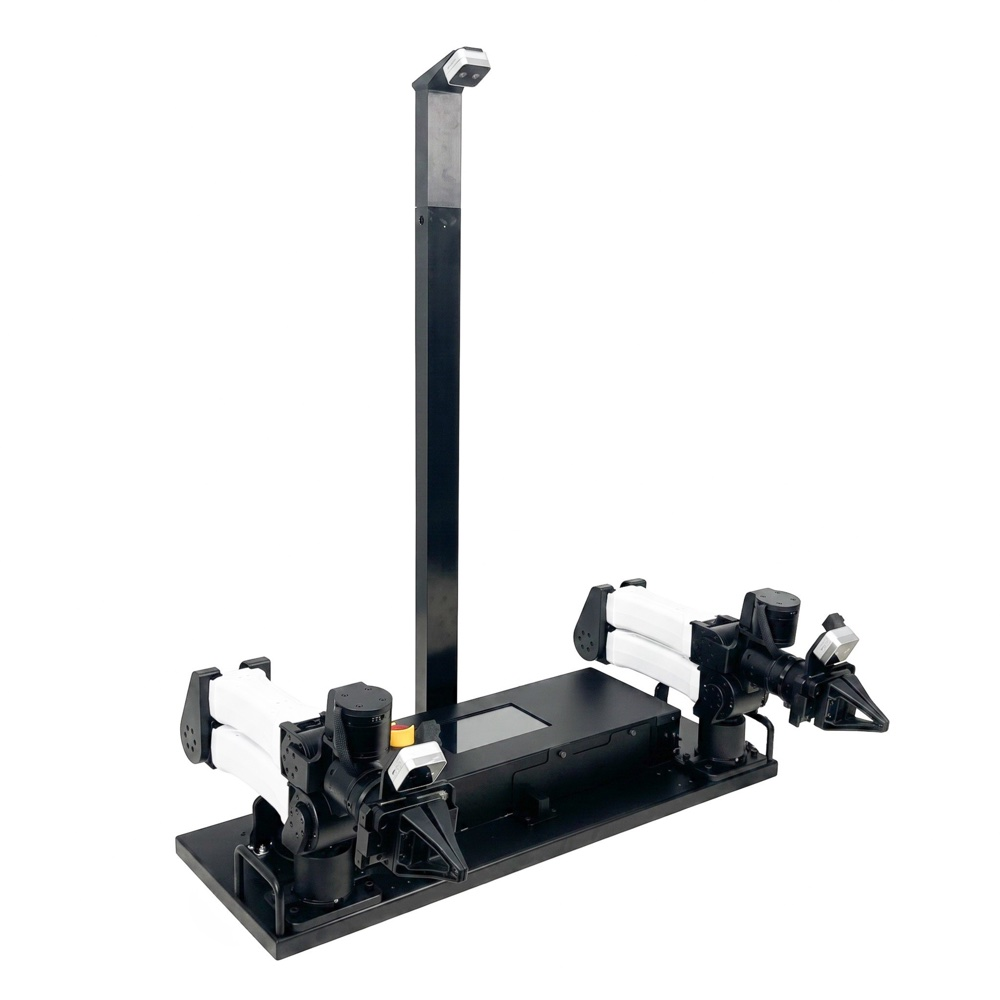

Executive Summary
On September 4, TechCrunch reported that XDOF, a startup that collects teleoperation data for robot learning, is in late-stage talks for a Series B at a valuation of about $1.2 billion, led by 8VC. That comes three months after the company left stealth in June by disclosing a $70 million Series A. XDOF builds no models and no robots. It gathers records of humans moving robots remotely and hands them to frontier AI labs and robotics companies.
What that valuation rests on is visible in a dataset released in June. ABC-130K, which lists two XDOF founders among its co-authors, is 3,553 hours of bimanual manipulation. All 3,553 hours were recorded on one kind of workstation, inside an enclosure walled off on three sides in white. The paper states for itself that this narrows background diversity. And separately from the 3,553 hours released, the researchers had an internal 7,000-hour corpus they used for development.
This article looks at what XDOF actually sells, and how far the collection conditions of the released dataset have been documented. For teams that buy robot learning data from outside, the question left over is what to write into the contract.
Key figures
Source: Allshire et al., Scalable Behavior Cloning with Open Data, Training, and Evaluation (arXiv:2606.27375, June 25, 2026); Temkin, TechCrunch (September 4, 2026)
3,553 hours
Real-robot manipulation in ABC-130K
134,806 episodes across 195 tasks. The internal corpus the same team held for development runs to 7,000 hours
$8,000
Price of one rig that recorded it
The paper puts the AgiBot G1 at $30,000 and ALOHA-class rigs at about $20,000
44%
Share carrying subtask annotations
1,552 of the 3,553 hours. Coverage varies sharply by task, and every t-shirt-folding episode has them
20
Customers XDOF has disclosed
How many of them are frontier labs is described only as several
A Company With No Plans to Raise Again Reopened in Three Months
XDOF was founded in 2024 by the UC Berkeley researchers Philipp Wu (CEO) and Fred Shentu (CTO). It disclosed a $70 million Series A in June, with participation from Thrive Capital, Spark Capital, Andreessen Horowitz, Lux, and WndrCo. The DOF in the name comes from degrees of freedom, the number of independent motions a robot can perform, and the X in front stands for putting no ceiling on that number, as Wu explained it. The company was not planning to raise again so soon. Growth accelerated to the point where annualized revenue is approaching $50 million, and venture investors approached the company about a new round, people with knowledge of the deal told TechCrunch.
None of this is settled. TechCrunch also said it was unable to learn the total capital being raised or whether the $1.2 billion valuation includes the new funding. The terms of the deal are not final and could still change.
Investors describe the company as the Scale AI or Mercor for physical robotics. Mecka AI is named as a rival in real-world data collection, and human-data platforms expanding beyond large language models, such as Scale AI and Micro1, are moving toward the same ground. The company previously told TechCrunch that it works with 20 customers, several of which are frontier AI labs. That is not the same as saying all 20 are frontier labs. How many are has not been disclosed.
What It Sells Is the Collection Pipeline, Not the Labels
TechCrunch summarized the company's aim as building the data pipelines, collection tools, and annotation systems that frontier AI labs and robotics companies cannot easily build themselves. The shape of it is closer to outsourcing the robotics industry's entire data-supply chain. Large language models trained on the whole internet, but physical robots have no equivalent body of real-world data to draw from, which makes collection itself the bottleneck.
Collection runs along two tracks. In one, a person moves a robot arm remotely and leaves behind a demonstration. In the other, a person wears sensors on their body and records everyday work such as folding clothes or flattening boxes. The company says it plans to hire and train both teleoperators and egocentric operators worldwide. Because the source of the product is people who move robots rather than people who attach labels, the labor economics differ from those of a conventional data-labeling company.
The company sorts this raw material into three tiers. The most valuable tier is teleoperation data collected on the very robot a customer will deploy. Next comes teleoperation on general-purpose rigs like GELLO. At the bottom sits everyday human motion captured through wearable sensors, and in June the company said it plans to build those sensors itself. It added that a business handing over data alone could be a dead end, which is why cleaning, tooling, and annotation are attached to it.
Wu put the reason labs do not do this themselves in operational terms. You need a warehouse of hundreds of thousands of square feet with hundreds of robots, and you need to maintain those robots, calibrate their physical parameters, and properly train operators. What a company of about 60 people as of June sells to 20 customers is closer to a promise to carry that operational burden for them.
2.1The Company That Started With a $300 Leader Arm
Wu studied how robots learn from large datasets as a PhD student. What blocked the research was the lack of large-scale data to work with, he told TechCrunch in June. So he and Shentu built a low-cost teleoperation system called GELLO, and that work became an influential paper in robotics and the foundation for the company.
The design described in the 2023 paper is simple. You build a leader device that shares the kinematic structure of the robot arm you want to control, using 3D-printed parts and inexpensive off-the-shelf servo motors. The bill of materials for one device comes to under $300. The comparison table in the paper puts a 3D mouse at $150, a Meta Quest 2 setup at $300, robot-on-robot teleoperation at $30,000, and a haptic device at $40,000. The researchers ran a user study showing that GELLO collects demonstrations more reliably and more efficiently than VR controllers or a 3D mouse, and released designs for the Franka, UR5, and xArm.

One thing is worth stating precisely here. The General in GELLO does not mean a single standard coordinate frame. It means a methodology in which you build a separate leader device matching each target arm's structure. What GELLO standardized is not a coordinate frame but a collection method, the low-cost leader arm.
The Conditions ABC-130K Actually Recorded
The paper posted to arXiv on June 25, "Scalable Behavior Cloning with Open Data, Training, and Evaluation," released a dataset, training code, and a simulator together under the name ABC. Its centerpiece, ABC-130K, holds 134,806 episodes across 195 tasks for 3,553 hours. The abstract rounds that to 3,500. Another 400 hours of simulated teleoperation came with it. The license is Apache 2.0 and the data is on Hugging Face.
That volume is not everything the researchers had. The paper states that its architecture ablations were run not on the public dataset but on a larger internal corpus of 7,000 hours, described as what the team had during development before the release dataset was finalized. The fine-tuning experiments lined up three starting points, and a policy pretrained on the released 3,553 hours beat training from scratch while a policy pretrained on the internal 7,000 hours beat that in turn, on all four tasks. How the two corpora differ in content is not disclosed, but the paper measured for itself how much of that difference survives into results.
More telling than the scale is the hardware description in Appendix C. All collection and evaluation ran on a bimanual platform of two I2RT YAM 6-DoF arms mounted parallel to each other on a table. The cameras are three Intel RealSense D405 units streaming at 30Hz, one mounted above the workstation for a third-person view and two on the wrists. The paper calls this setup an $8,000 YAM station in the body text. And the two arms sit inside an enclosure walled off on three sides in white. The rig is not uniform down to the fingertips: the hardware figure notes that a subset of the dataset was collected with a different gripper called FlexPoint, a part the I2RT store currently sells for $699.
"The enclosure narrows background diversity in the training distribution, but (i) reduces variance in evaluation from incidental visual disturbances and (ii) isolates fine-manipulation learning from the confound of background generalization. We note, however, that despite using only data collected in this caged setup, many of our policies transfer outside the cage and can be deployed in some in-the-wild settings."
ABC paper, Appendix C.1 (Hardware)
What matters is that the paper declares the trade-off itself. The cost side stays open: how far a policy trained on that data holds up against a different background is a separate question, and the paper logged transfer outside the enclosure as an incidental observation rather than a systematic test.
One passage in the paper shows that cost arriving. Box folding had zero real-world success from the pretrained model alone, and even after ten more hours collected under a stricter standard operating procedure and a round of fine-tuning, it reached only 24 percent. So the researchers collected more data by rolling out the policy and stepping in only when it got stuck, and they collected those interventions with the cage removed. Training on the intervention segments alone then let the policy exploit spurious correlations with the background and made it worse. They had to find a new mixture instead, 80 percent from the previous round, 10 percent from the current round's interventions, and 10 percent from the rest of those episodes. The white walls did not only narrow background diversity. They came back as an obstacle when data from a different background had to be mixed in.
Conditions diverge on the metadata side too. Anonymized teleoperator IDs and collection timestamps are attached to everything. Annotations that segment an episode into subtasks and describe each one cover 1,552 hours. Elsewhere the paper puts the annotated share at 44 percent of the whole. A company selling annotation systems and the annotation coverage of a released dataset are two separate numbers, so a procurement conversation has to ask about each. That 44 percent is not spread evenly either. The paper notes that every t-shirt-folding episode is annotated, which means coverage swings widely from task to task.
The paper sets its dataset alongside existing open ones. BridgeData-V2 is about 100 hours on a low-cost WidowX arm, DROID is 350 hours on a single Franka arm, and the bimanual data of MolmoAct 2, gathered on the same YAM platform, is 720 hours. The closest in scale is AgiBot World at about 3,000 hours, collected on the $30,000 AgiBot G1, while ALOHA-class rigs run about $20,000 by the paper's account.
3.1Not All of the 3,553 Hours Are the Same
The total is written as one block, but the inside of it is not uniform. Appendix H takes a single task, t-shirt folding, and digs into this. About 268 hours have piled up on that task alone, and operators work in visibly different ways. Operator 0, the highest-volume contributor, left 1,183 episodes across 19.5 hours, each averaging a short and deliberate 59 seconds. Operator 1 spent an average of 205 seconds across 226 episodes and produced lower-quality folds.
Here the result runs against intuition. Training only on the better operator's data sounds like an improvement, but it came out worse than training on the whole operator pool. The mean score out of five was 3.3 for the filtered version against 3.8 for the full one, with two completions out of ten against four. That said, the filtered model showed overfitting when trained longer and was stopped at 30k steps, so it is not a fully matched comparison. What worked instead was training on all the data with operator IDs appended to the task prompt: naming Operator 0 at inference time alone lifted the mean to 4.6 and completions to eight out of ten. That is the same trained checkpoint with only the prompt changed.
This is where an anonymized operator ID shows its worth. Instead of collecting more trajectories, adding one more layer of labels lets you choose at deployment whose habits the policy should follow. Subtask annotations do the same work. A policy trained without them regrasped an already-folded shirt, flattened it, and started over in five of ten trials, and feeding it the current stage in language removed that failure. Two invoices can list the same total hours while these two layers of labels decide how far the data can be used later. Worth adding that the base model for these experiments was pretrained on the internal 7,000-hour corpus rather than the public dataset.
The same person also changes over time. When selecting fine-tuning data, the researchers kept only the later-collected half of each operator's episodes, on the grounds that operators grow more practiced over the course of collection and their later records are better. Records from the same person on the same rig are worth different amounts depending on when they were made.
3.2Whose Dataset Is It
TechCrunch wrote that XDOF is partnering with UC Berkeley's AI Research lab to release ABC. The paper reads a little differently. Five affiliations appear side by side, UC Berkeley, MIT, Amazon FAR, XDOF, and Carnegie Mellon University, and a footnote states that the six starred core contributors did this work during internships at Amazon FAR. The project's GitHub organization is named amazon-far. The string XDOF appears nowhere in the paper apart from that one line of affiliations.
That does not make XDOF a name attached to someone else's work. The founders Philipp Wu and Fred Shentu are on the author list, and five authors are listed under XDOF. The company blog describes its own role this way: it made XDOF's evaluations service available to the authors and worked with them to define rubrics and evaluate policies in sim and real at checkpoints across architectures and hyperparameters. On the hardware carrying the data, it says all of the data came from bimanual stations using I2RT's YAM arms. Put precisely, the shape is closer to Berkeley and MIT researchers doing the work during Amazon FAR internships, a dataset released under Amazon FAR, and XDOF supplying the evaluation infrastructure.
The account of the leader device needs the same precision. Appendix F says that most robot teleoperation data, including the data in this paper, is collected using leader arms, citing ALOHA and GELLO together. The passage that pins down a pair of GELLO leader arms is the description of simulated teleoperation, and the real-robot code description gives GELLO leader arm and YAM follower arm as examples of independently communicating nodes. There is no sentence in the paper that establishes all 3,553 hours of real-robot data as GELLO-collected.
When the Collection Rig Becomes a Catalog Item
That the rig determines the character of the data is the CEO's own formulation. Explaining in June why the company wants to build its wearable sensors itself, Wu said this.
"Your camera choice is going to affect the quality of your data — which is going to affect how your hand-tracking algorithm performs. If you don't design the hardware well from the start, the data you collect might have very specific problems that you didn't anticipate."
Philipp Wu, TechCrunch, June 17, 2026
The path from a data spec to a hardware spec is shorter than it looks. The front page of the online store run by I2RT, which builds the arms, currently carries a banner announcing the ABC Kit. The product is called ABC Box, and its description ties it directly to ABC, the open-source behavior cloning stack from UC Berkeley, MIT, Amazon FAR, and XDOF.

"Matched kinematics. ABC Box's two arms mirror the follower configuration used to collect ABC-130K, so policies trained on the released dataset and checkpoints transfer to your hardware with minimal calibration."
I2RT ABC Box product description (checked September 7, 2026)
The same page advertises GELLO-compatible teleoperation, telling buyers to pair the box with passive encoder-only leader arms or YAM leader arms, and says joint limits, workspace geometry, and camera mount points were designed to match the simulation models released alongside ABC. As of September 7, 2026, the ABC Research Kit is $6,349 and the ABC Box is $9,599. The same store sells a YAM arm for $2,999, a leader arm for $2,999, and a turnkey bimanual teleoperation station for $23,999. A workstation carrying a dataset's name is already something you can put in a cart.
Going one step further and writing that twenty frontier labs now inherit the same coordinate frame and latency profile would run ahead of the record. Twenty is the total customer count, and how many of them are labs has not been disclosed. Whether the commercial pipeline XDOF runs for customers matches the ABC-130K configuration cannot be verified from outside either. What is verifiable is the released side, and the fact that its conditions are written down in such detail is a merit of this dataset.
The tiers described earlier also carry a force pointing the other way. The company says the most valuable tier is data taken from the very robot a customer will deploy. Convergence on one kind of workstation and a business that collects separately for each customer's hardware sit inside the same company.
So for a team buying robot learning data from outside, there are five things to check in the contract.
- How far the collection environment is documented. Three thousand five hundred hours gathered inside white walls and the same hours gathered in a real store or factory are not worth the same. A supplier that writes down the walls and the camera placement, as the ABC paper does, is the rarer case.
- Whether what the supplier holds is what reaches you. The ABC team kept a separate internal 7,000-hour corpus, and a policy pretrained on it beat one pretrained on the released 3,553 hours across all four tasks. That gap does not appear as a line item on any invoice.
- At which layer the annotations sit and what percentage carries them. In ABC-130K, subtask annotations covered 44 percent of the whole and varied sharply by task. The paper showed experimentally that operator IDs and subtask annotations let you select a policy's behavior at deployment. An invoice listing only total hours hides that difference.
- Whether changing the hardware means collecting again. Kinematic structure, camera positions, control rate, and the type of leader device have to be in the specification before porting cost can be calculated. The sales copy for ABC Box promises exactly these values, which is instructive.
- Who runs the evaluation. If the party selling the data also designs the rubric and evaluates the checkpoints, the independence of the performance numbers has to be secured separately. In the ABC case, XDOF wrote on its own blog that it took that role, and that post ends by inviting readers to get in touch if they need more. To its credit, ABC also puts its scoring rubric in an appendix table and releases more than a hundred hours of evaluation rollouts with their scores, leaving room to check the work from outside. Since few suppliers open up that far, the ones that do not should be asked why.
Whether robot data can be bought with money is a question Pebblous has taken up before in an earlier report, and we covered Ai2's MolmoAct 2 as a case of releasing data and model together. As it happens, MolmoAct 2's 720 hours also came off the same YAM platform. One kind of low-cost bimanual workstation is becoming the shared floor of several labs.
Editor's Note
The first thing Pebblous asks when diagnosing data quality is what conditions produced this data. In robot data, those conditions are the rig. Which arms, which camera placement, which walls a recording was made inside decide the character of the data, and when that specification is absent from the contract there is no way to trace it back later. This article does not offer a verdict on which supplier is better. It is useful for gauging what should be written down before the money changes hands.
Thank you for reading. The facts in this article were checked directly against TechCrunch's September report and its June founder interview, the appendices of the ABC paper, the XDOF blog, and the I2RT product pages. If your team has procured robot learning data from outside, we would be glad to hear which clauses you put in the contract.
Pebblous Data Communication Team
September 7, 2026